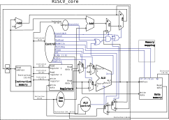

In this practice session we will implement the RV32I core that we have seen in the theory session. The final schematic of such core is presented in the following image:

All RV32I opcodes and their meaning
As you might remember, we extensively used a RV32I opcode list in our theory sessions for codifying control signals and understanding the datapath of the processor. Below a list of the opcodes that the processor that we implement in this practice supports:
| Opcode | Action | Format | Notes |
|---|---|---|---|
| 0110011 | R-format | Funct3 and Funct7 codify action | |
| 0000011 | Load | I-format | Funct3 codifies type of load |
| 0010011 | Arith | I-format | Arithmetic operations with immediates |
| 1100111 | JALR | I-format | PCabsolute, but immediates codify jump offset |
| 0100011 | S-format | Funct3 codifies the length | |
| 1100011 | SB-format | Relative branches | |
| 0110111 | LUI | U-format | |
| 0010111 | AUIPC | U-format | |
| 1101111 | JAL | UJ-format | 20-bit immediate for offset |
New Vivado project with changes
Download the new Vivado project from Poliformat. This vivado project contains the modified processor structure, with the new Data memory module and all the RISCV-core glue logic implemented. Take a look at BranchVal generation inside riscv_core.sv. In this file you should also notice the inclusion of the new multiplexors.
However, this Vivado project has some modules that are left to implement by the student:
- Imm gen. This immediate generation module should have been fully implemented in the previous practice, copy your previous code into the new module and ensure all types of immediate instructions are properly decoded.
- ALUcontrol. As in the previous practice, the implementation of ALUcontrol is left to the student.
- Control. As in the previous practice, the implementation of Control is left to the student.
- ALU. As in the previous practice, the implementation of the ALU module is left to the student.
Designing a new Control module
In the previous practice, we developed a control module capable of supporting some (but not all) RV32I instructions. In this lab session we will support the totality of unprivileged instructions (Excluding System, Synch and Counter access instructions)
To do so, we must modify our control unit to add this new functionality with three new signals: branchJALR,LUI and PCALU. We must assert branchJALR when a JAL or a JALR instruction is being executed. We must assert LUI when a LUI instruction is executed, and we must assert PCALU, when the input of the ALU is the PC.
To account for the new supported instructions, we adapted the ALUOp behavior as described in the following table:
| ALUOp | Meaning |
|---|---|
| 00 | Add |
| 01 | I-format |
| 10 | R-format |
| 11 | SB-format |
BEWARE, the 01 ALUOp encoding has changed from substract to I-format instructions. This is due to the need to differentiate I-format instructions and R-format instructions. As I-format instructions (generally) don’t encode the operation in the funct7 field.
Exercises
Exercise 1. Generate the control signals of the processor
Fill the following table with the control signals of the processor. Optionally, create an excel/google_docs
| Instruction | ALU Src | Mem toReg | Reg Write | Mem Read | Mem Write | Branch | ALUOp | Branch JALR | LUI | PC ALU |
|---|---|---|---|---|---|---|---|---|---|---|
| R-format | ||||||||||
| I-Load | ||||||||||
| I-Arith | ||||||||||
| I-JALR | ||||||||||
| S-format | ||||||||||
| SB-format | ||||||||||
| U-LUI | ||||||||||
| U-AUIPC | ||||||||||
| JAL |
Upload a capture of this table called Exercise1.png into the poliformat task.
Exercise 2. Generate the ALUControl output signals
Given the following table describing ALU op inputs:
| Operation | Op |
|---|---|
| AND | 0000 |
| OR | 0001 |
| ADD | 0010 |
| Substract | 0110 |
| SetLessThan | 0011 |
| ShiftLeft | 0100 |
| LessThanUnsigned | 0101 |
| XOR | 0111 |
| ShiftRightLogical | 1000 |
| ShiftRightArithmetic | 1001 |
Create a table that given the ALUOp, Funct3 and Funct7 inputs generates the ALUControlOutBits output. Fill the following table or optionally create a google_docs/excel table with the following fields:
| ALUOp | Funct3 | Funct7 | AluControlOutOperation | AluControlOutBits |
|---|---|---|---|---|
| 00 | ??? | ??????? | Add | 0010 |
Upload a capture of this table called Exercise2.png into the poliformat task. Optionally upload your google_docs/excel table into the task with the name Exercise2.[extension]
Exercise 3. Control
Using the exercise 1 table inputs and outputs, open the provided Control.sv module and fill the gaps.
Exercise 4. ALUControl
Using the exercise 2 table inputs and outputs, open the provided alu_control.sv module and fill the gaps.
Exercise 5. ALU
Open the new project ALU ph_alu.sv and provide support for the new operations using the Exercise2 ALU op table.
Note that previous ALU input definition was input [w-1:0] a,b; while this ALU input definition is input signed [w-1:0] a,b; If a and b are not declared signed the shift right arithmetic operator will not function properly.
Exercise 6. Immediate generation
Open the new project imm.sv immediate generator and paste your previous practice immediate generation code here. If your previous practice immediate generation code did not support all immediate instructions, please, provide support for them now.
Testing the processor
The Vivado project provided has a default testbench that compares your processor register values and pc to a known and functioning RISC-V processor each cycle. It provides a warning if these values do not match, stopping the simulation. When the simulation is stopped a message with the format "Rams are different at index 3: golden_ram[3] = 0x00000001, ram_mem[3] = 0xFFFFFFFF is displayed in the TCL console. If the simulation reaches the $stop value at line 76 and the PC is not zero, then your processor passed our toy test!!
Optional. Exercise 7. Generating a bitfile with our functioning processor.
Analise the assembly code of [project]\riscv_txt\Cafe_and_switch.txt. As you can see this code is reading and writing to address 0xDEAD0000. This address is memory mapped to the 7 segment display when writing and to the 16 board switches when reading. Replace the from and fram parameters from tiny_riscv.sv for your corresponding Cafe_and_switch.txt and ram_7seg_bytes.txt, generate a new bitstream, and flash it into the FPGA. Is the Cafe_and_switch.txt assembler code doing what you expected?
Optional. Exercise 8. Modifying Cafe_and_switch.txt to process switch inputs instantaneously
As you can see with Exercise 7, switch values take a while to update on the 7 segment displays. However, our processor is running at a lightning fast 10MHz. Modify the Cafe_and_switch assembler code to continuously update the right four 7segment displays with the FPGA switch values, but make it update the leftmost switches with memory contents once a second. For compiling your program ask for help to the professor. Generate a bitfile, flash it into the FPGA and realize that you programmed your own RV32I processor and wrote original functioning code running on it!!